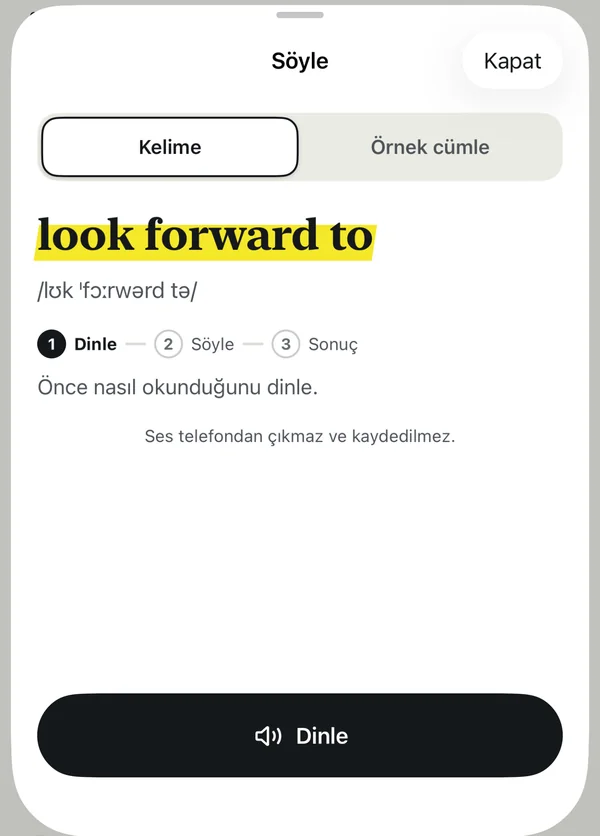
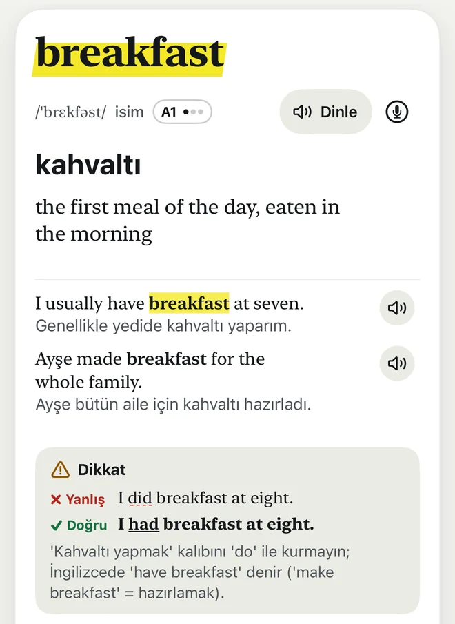

iPhone için · yakında
Telefonuna her bakışında bir İngilizce kelime.
Lockglow kilit ekranına ve ana ekrana, Türkçe anlamıyla bir kelime koyar. Uygulamayı açmadan okursun, dinlersin, öğrenirsin.
- 1.068 kelime kartı
- A1, A2 ve B1
- Hesap yok, reklam yok
Kilit ekranı ve ana ekran
Ders çalışmaya ayrıca vakit ayırmazsın.
Günde onlarca kez telefonuna bakıyorsun. Lockglow her bakışı küçük bir İngilizce dersine çevirir: kelime, sen başka bir iş yaparken gözünün önüne gelir.
- Kilit ekranında dikdörtgen ve tek satırlık widget: kelime ve Türkçe anlamı.
- Ana ekranda küçük ve orta widget. Dinle düğmesi kelimeyi uygulama açılmadan sesli okur; Biliyorum ve Sonraki de widget'ın üstünde.
- Kelimenin ne sıklıkla değişeceğini sen seçersin.
- Yer daralınca önce İngilizce tanım düşer. Türkçe anlam ortasından kesilmez.
Tek satırlık widget nasıl kısalır?
- actually · aslında, gerçekteyer varsa
- actually · aslındailk anlam kalır
- actuallyen dar hâli
Widget'ın ne zaman yenileneceğine son kararı iOS verir; yenileme bazen birkaç dakika gecikebilir. Görüntüler uygulamanın 22 Ekim 2026 tarihli simülatör görüntüleridir.
Tekrar
Öğretici ve yormayan tekrar
Kelimeyi önce kilitli ekranda görürsün. Sonra Tekrar'da anlamını hatırlamaya çalışırsın. Görmek tek başına yetmez; kelime, hatırladıkça yerleşir.
Yeni kelime iki adımda: Tanış, sonra Hatırla
Tanış. Kelimeye bak, dinle, ne demek olabileceğini tahmin et. Sonra anlamını aç: Türkçesi, bir örnek cümle ve varsa tek satırlık Dikkat notu.
Hatırla. Hemen ardından kısa bir soru gelir: dört şıktan anlamını seç. Puanı cevabın verir; "ne kadar bildin?" diye kendini puanlaman gerekmez.
Kendin dene
- Tanış
- Hatırla
Ne demek olabilir? Tahmin et.
Türkçesi: ödünç almak
Can I borrow your pen for a minute?
Kalemini bir dakikalığına ödünç alabilir miyim?
Dikkat Yanlış: Can you borrow me your pen? Doğru: Can you lend me your pen?
Şimdi hatırlıyor musun, bakalım.
borrow kelimesinin anlamı hangisi?
Şıklar başka kartların Türkçe anlamları. Kelimenin karıştırılan eşi (lend), sen borrow'u öğrenmeden şık olarak gelmez.
Aralıklı tekrar: unutmadan önce sorulur
Her doğru cevapta kelime bir basamak çıkar ve ara uzar. Zorlandığın kelime sık, iyi bildiğin kelime seyrek gelir.
- 1. basamak
- 2. basamak
- 3. basamak
- 4. basamak
- 5. basamak
Ara: 1, 2, 4, 8 ve 16 gün. Son basamağı da geçince kelime öğrenilmiş sayılır; kalıcı olsun diye arada bir yine sorulur.
Yormayan kısmı
- Seri sayacı yokBir gün ara verirsen kimse seni suçlamaz. "Ara verdin, sorun değil."
- Kısa turlarBir tur en çok 10 soru. İstersen bir tur daha.
- Günde tek hatırlatmaSeçtiğin saatte, çalışacak kelime varsa.
- İşe dair geri bildirim"Doğrusu: borrow." Yanlış seçince doğrusunu ve anlamını hemen görürsün.

Söyle
Telaffuzunu dene. Ses telefondan çıkmaz.
Kelimeyi ya da örnek cümleyi sesli söyle. Telefon dinler ve Türkçe cevap verir: seni anladı mı, hangi kelimeyi duymadı, neye dikkat etmelisin.
- DinleÖnce nasıl okunduğunu dinle.
- SöyleMikrofona dokun ve sesli söyle.
- SonuçAnlaşıldıysa söyler; anlaşılmadıysa neyi duyduğunu gösterir.
Tanıma iPhone'unun içinde yapılır. Sesin kaydedilmez ve hiçbir sunucuya gitmez.
Puan, yıldız ve geri sayım yok. Söyle tekrar puanını değiştirmez; istediğin an kapatırsın.
iOS 26 ve sonrasında İngilizce konuşma modeli ilk kullanımda iner. iOS 17–25'te telefonunda cihaz içi İngilizce (ABD) tanıma olması gerekir.
Türkçe konuşanlara özel
Dikkat: hatayı baştan gör
598 kartta Dikkat kutusu var: Türkçe konuşanların sık yaptığı hata, doğrusu ve kısa bir Türkçe açıklama. Farklı kelime iki satırda da işaretlidir; renk tek başına anlam taşımaz.
Örneğin "kahvaltı yapmak" Türkçede yapmak ile kurulur, İngilizcede have ile: I had breakfast, I did breakfast değil.
Sahte dostlar
Kulağa Türkçe gibi gelen ama başka şey demek olan kelimeler. Kartında ilk bu uyarı görünür.
-
actually, şu kelimeyle aynı değil: aktüel
actually = aslında. Aktüel (güncel) için: current.
-
apartment, şu kelimeyle aynı değil: apartman
apartment = daire. Bütün bina: apartment building.
-
fabric, şu kelimeyle aynı değil: fabrika
fabric = kumaş. Fabrika için: factory.
-
sofa, şu kelimeyle aynı değil: sofa
sofa = kanepe. Evdeki sofa (hol) için: hall.

Uygulamada ayrıca
-
Sözlük
Bütün kartlarda İngilizce ya da Türkçe ara. "ı/i", "ş/s", "ğ/g" gibi harfleri karıştırsan da bulur.
-
Sana göre başla
İlk açılışta seviyeni ve konularını seçersin: yeme içme, ev, seyahat, iş yeri, sağlık ve daha fazlası. Widget kurulumunu adım adım gösterir.
-
Nasıl öğrenirim?
Kısa bir rehber: neden hatırlamaya çalışmak işe yarar, Tekrar'daki düğmeler ne demek, günde kaç kelime iyi gelir.
Gizlilik
İlerlemen telefonunda kalır.
Lockglow senin verini hiçbir sunucuya göndermez.
- Hesap yokKayıt olmadan başlarsın. E-posta ya da şifre istemez.
- Reklam ve takip yokUygulamada reklam ya da seni izleyen bir araç yok.
- İlerlemen sendeHangi kelimeyi bildiğin yalnız iPhone'unda durur. Biz göremeyiz.
- Ses sendeSöyle'de konuşman telefonun içinde tanınır; kaydedilmez, gönderilmez.
Bu sayfanın kendisi de çerez, takip aracı ya da dışarıdan yüklenen yazı tipi kullanmaz.
Bekleme listesi
Lockglow çıkınca haber al.
Uygulama şu an deneme aşamasında. Mağazaya çıkınca bekleme listesindekilere tek bir e-posta gidecek.
Bu form şimdilik demo. E-postan hiçbir yere gönderilmez ve kaydedilmez. Liste henüz açılmadı.